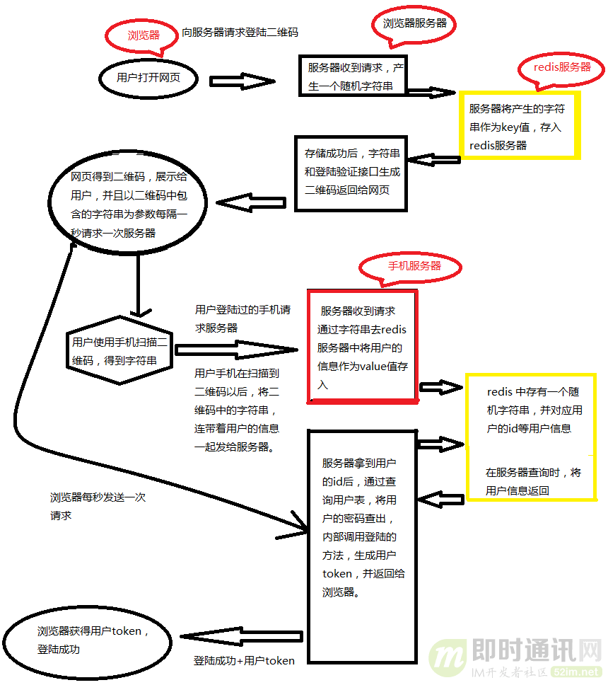
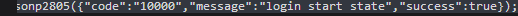

扫码登录
前言
本文将简要的介绍扫码登录功能的技术实现逻辑，并实际结合淘宝、微信的扫码登录功能，学习和研究大厂主流应用的技术实现思路。
内容
一、基本技术原理
1.1 扫码登录功能到底是什么样的？
首先介绍下什么是扫码登录。现在大部分同学手机上都装有微信、qq 和淘宝这一类的软件。而这些 app 都有他们相对应的网页端。为了让用户在使用他们的网页时登录更加方便和安全，使用手机扫一扫就可以登录的服务，就显的自然而然了。
几个主流大厂应用扫码登录时的界面效果如下：
有很多小伙伴可能会感到很神奇，网页上只是显示了个二维码，它怎么就知道是哪个手机扫到了二维码，并且进行登录的呢？而且，登录完成以后，还能直接把用户信息显示给用户，真的是很神奇啊。
1.2 扫码登录功能的完整技术逻辑
网页端与服务器的配合逻辑：
接下来就是对于这个服务的详细实现。
首先用户打开网站的登录页面的时候，向浏览器的服务器发送获取登录二维码的请求。服务器收到请求后，随机生成一个 uuid，将这个 id 作为 key 值存入 redis 服务器，同时设置一个过期时间，再过期后，用户登录二维码需要进行刷新重新获取。
同时，将这个 key 值和本公司的验证字符串合在一起，通过二维码生成接口，生成一个二维码的图片（二维码生成，网上有很多现成的接口和源码，这里不再介绍）。然后，将二维码图片和 uuid 一起返回给用户浏览器。
浏览器拿到二维码和 uuid 后，会每隔一秒向浏览器发送一次，登录是否成功的请求。请求中携带有 uuid 作为当前页面的标识符。这里有的同学就会奇怪了，服务器只存了个 uuid 在 redis 中作为 key 值，怎么会有用户的 id 信息呢？
这里确实会有用户的 id 信息，这个 id 信息是由手机服务器存入 redis 中的。具体请继续阅读“手机端与服务器的配合逻辑”。
手机端与服务器的配合逻辑：
话说，浏览器拿到二维码后，将二维码展示到网页上，并给用户一个提示：请掏出您的手机，打开扫一扫进行登录。
用户拿出手机扫描二维码，就可以得到一个验证信息和一个 uuid（扫描二维码获取字符串的功能在网上同样有很多 demo，这里就不详细介绍了）。
由于手机端已经进行过了登录，在访问手机端的服务器的时候，参数中都回携带一个用户的 token，手机端服务器可以从中解析到用户的 userId（这里从 token 中取值而不是手机端直接传 userid 是为了安全，直接传 userid 可能会被截获和修改，token 是加密的，被修改的风险会小很多）。手机端将解析到的数据和用户 token 一起作为参数，向服务器发送验证登录请求（这里的服务器是手机服务器，手机端的服务器跟网页端服务器不是同一台服务器）。
服务器收到请求后，首先对比参数中的验证信息，确定是否为用户登录请求接口。如果是，返回一个确认信息给手机端。
手机端收到返回后，将登录确认框显示给用户（防止用户误操作，同时使登录更加人性化）。用户确认是进行的登录操作后，手机再次发送请求。服务器拿到 uuId 和 userId 后，将用户的 userid 作为 value 值存入 redis 中以 uuid 作为 key 的键值对中。
登录成功时的逻辑：
然后，浏览器再次发送请求的时候，浏览器端的服务器就可以得到一个用户 Id，并调用登录的方法，生成一个浏览器端的 token，再浏览器再次发送请求的时候，将用户信息返回给浏览器，登录成功。这里存储用户 id 而不是直接存储用户信息是因为，手机端的用户信息，不一定是和浏览器端的用户信息完全一致。
详细的技术原理总结如下图所示：

二、淘宝的扫码登录技术实现
本节我们以淘宝的扫码登录为例，来实际研究分析一下淘宝的扫码登录实现逻辑。
三、微信的扫码登录技术实现
登录界面传回来的参数为：
然后请求(GET)报文是这样的:
https://qrlogin.taobao.com/qrcodelogin/qrcodeLoginCheck.do?lgToken=2c3b4d53ef0513787bf4ce711ea5ba53&defaulturl=&_ksTS=1540106757739_2804&callback=jsonp2805
关键的就是 lgToken，是网页的唯一 ID，当打开了二维码登录的时候，网页在轮询(应该是长轮询 long polling)调用接口去请求服务器。
如果没有扫码，返回的为：

如果扫了的话则会返回：
{
"code": "10001",
"message": "mobile scan QRCode success",
"success": true
}
2
3
4
5
6
7
8
9
长时间没有扫码的话，网页端会停止轮询，二维码失效！
3.1 技术原理流程图
3.2 实际的技术实现逻辑
四、小结
扫码登录这个功能，现在已经不只出现有 IM 应用里，各种带有移动端的线上网站也都有了这个功能，所以本文中介绍的技术原理并不局限于只用于实现 IM 应用中的扫码登录。
另外，为了方便抓取真实的数据进行分析研究，本文中的 PC 端案例分析是针对的是网页端，但实际上如果你的 PC 端是富客户端（也就是.exe、.dmg 这样的安装版），原理也是一样的，而且还不需要考虑浏览器里的跨域问题等。
参考资料
联系作者
平凡世界，贵在坚持。